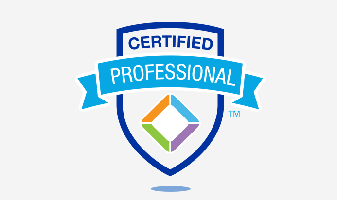

Teaching Experience
Work History & Highlights
Grade: K-12 students
Educator|Instructional Designer |Team Lead
PROXYNET COMMUNICATION LIMITED Ikeja, Lagos Nigeria
Responsibilities
• Educating K-12 students on Mobile Application Development, Web Development, Animation Programming, 3D Design, Games Development, Artificial Intelligence, Robotics, IoT, Physical Computing, Drone Technology, Data Analysis, Python, Javascript, Graphics Design, 3D Modelling, Video Animation, Digital Art, and Digital Literacy PowerPoint, CapCut, ShotCut, ClipChamp, iSpring Suite, Premiere Pro, etc.
• Researching, and developing training materials for Primary and secondary school.
• Create Instructional Videos, and lessons for students using Articulate 360, PowerPoint, CapCut, ShotCut, ClipChamp, iSpring Suite, Premiere Pro, etc.
• Working knowledge of collaboration and conferencing software, Google Classroom, Microsoft teams, Moodle, Google Meet, and Zoom.
• Ensuring the appropriate measurement and evaluation strategy is designed and executed to measure the effectiveness of learning in schools.
• Demonstrating an ability to blend multiple approaches and strategies to include: instructor-led, online, intact, and experiential learning offerings, and their emerging technologies.
• Training teachers on Class management, Digital Literacy, Coding, Robotics, School Management Software (Proskool), SMART Interactive Boards, Learning Management Software (Prolearn), RFID Tracking System, Printing Solutions, Video Conferencing solutions, etc .
• Assisting HR with the process of recruitment, including vetting candidates, assisting with interviews and issuing employment contract to qualified applicants.
• Ensuring learning resources are readily available for all training sessions • Identifying and evaluating an innovative educational methodology that may be appropriate for the targeted audience; incorporates new methodology as appropriate to enhance and update the effectiveness of education and skills development programs
Grade: Secondary Students
Educator
CCHUB Yaba, Lagos Nigeria
Responsibilities
• Educating students on how to handle their online presence and how to be safe online to avoid malicious harm
• Closely supervising all classroom activities, ensuring students followed classroom rules and good behavior was maintained.
• Built relationships and communicated with parents to provide the best learning environment for children
Grade: Primary students
Educator|(Summer Coaching)
RELEARN Yaba, Lagos Nigeria
Responsibilities
• Educating students on how to create stories, animations, and games using scratch
• Closely supervising all classroom activities, ensuring students followed classroom rules, and good behavior was maintained.
• Managing the behavior of children in class using redirection and de-escalation tactics.
• Built relationships and communicated with parents to provide the best learning environment for children.
Grade: Primary students
Educator
OANDO FOUNDATION Lekki, Lagos Nigeria
Responsibilities
• Facilitating the Girls’ code club created by Oando Foundation in partnership with TheirWorld
• Identifying coding and documentation trends to develop and comprehensive Provider-specific plan
• Enhancing the girl child to discover their potential through basic programming knowledge such as scratch, Coffeescript, Minecraft, using the Kano Computer
• Documentation of Learning Outcomes and uploading of pupils' work online via Goggle docs and Taught pupils’ morals and basic knowledge to enhance their confidence as girls
• Ensuring the appropriate measurement and evaluation strategy is designed and executed to measure the effectiveness of learning in schools.
• Communicated frequently with parents, students and faculty to provide feedback and discuss instructional strategies.
• Training, supporting, and coordinating the ICT teachers to effectively deliver the curriculum for each programme.
• Modified lessons and curriculum to accommodate diverse learners by using strategies such as peer-assisted learning and group work.
• Developed and implemented classroom routines to address varying student needs.
• Administered assessments to determine each student's specific educational and social needs.
• Shifted between formal and informal methods of teaching to keep students engaged.
Certification and Education
Professional Certificates

• Microsoft Office Specialization – “Excel Associate Microsoft 365 Apps” February 2023
• Microsoft Certified Educator “Technology Literacy for Educators” January 2023
• IBM “Data Analytics Essentials” December 2022
• Coursera “Google Data Analytics” October 2022
• WAAW Foundation “Certificate of Training on Full MEAN stack web development” 2018, LAGOS STATE, NIGERIA
• Virtual Nigeria “Virtual Nigeria Certified Linux Professional (VNCLP)” 2017 Yaba, LAGOS STATE, NIGERIA
• IMS computer training school “Diploma in Computing” 2008 Ikeja, LAGOS STATE, NIGERIA
Short Courses Professional Certificates
• Gnowbe “Microlearning Instructional Design 101(MID)” 4th January, 2024
• Udemy “Google calendar: Virtual Assistance” 3rd January 2024
• Lagos State DSVA and OEQA “Introduction to Safeguarding and Child Protection” 24th October 2023
• Datacamp “Data Analyst with Python Track” November 2022
• Datacamp “Data Skills for Business” November 2022
• Datacamp “Data Analysis in Excel” November 2022
• Accenture “Digital Skills: Artificial Intelligence” August 2022
• TEFL Professional Institute - Teacher Record “Teaching English as a Foreign Course” May 2022
• Google “Distance Learning for Educators” May 1, 2020
• University of Helsinki “Elements of AI Certification of Completion” February 2020
• DEVC Training with Andela “Foundation Web Development” December 2019
• GNT CyberSec “Certification in Cyber Security, Comptia A+, IOT, LPI Linux Essentials” 2019
• Certification in WACREN “ Certification in Physical Computing in Python” 2019
• Pluralsight, and Andela “Certification in Android(Proficient Level)” 2019
• Udacity, Andela and Google “Google Africa Scholarship Android Basic Course” 2018
Education
• Ajayi Crowther University MBA in View 2024
• Yaba College of Technology HND. Computer Science Upper Credit 2015 - 2017, LAGOS STATE- NIGERIA
• Yaba College of Technology OND. Computer Science Distinction 2010 - 2013, LAGOS STATE- NIGERIA
Professional Membership
• Computer Professionals Registration Council of Nigeria (CPN) “Graduate Member(GMCCPM)” 2017
• Computer Science Teachers Association (CSTA)